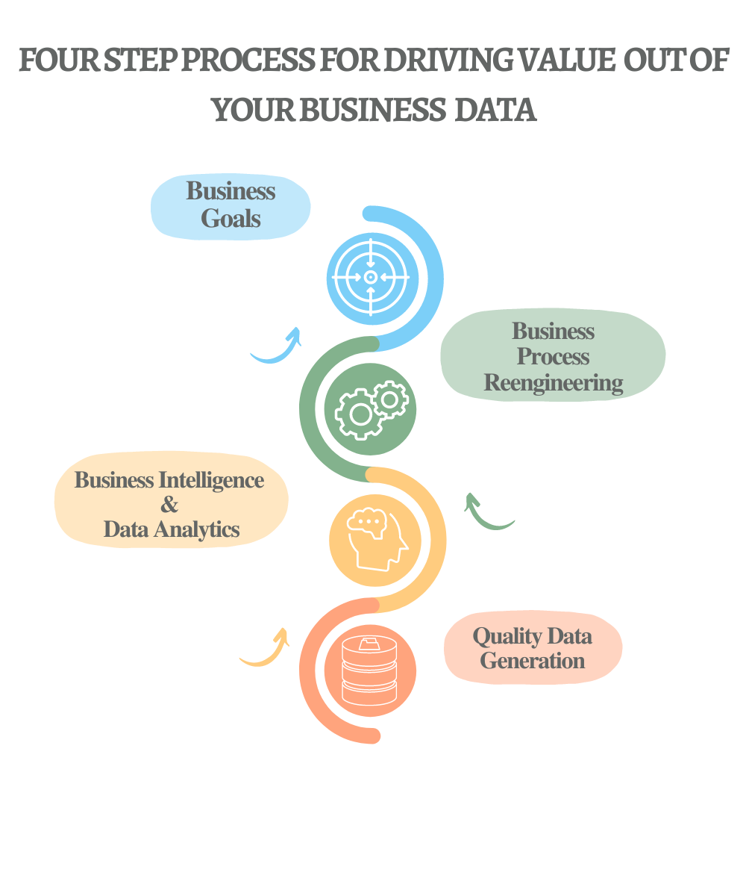

About
To view our complete profile click here
Our Brief Overview
Stat Devs is a data analytics company aiming to enhance data driven culture and values for businesses and academia focusing on fast evolving fields in Data Science, Statistics and Data Visualization.
Through data analytics and research, our aim is to assist businesses in data driven decisions. From climate change to day to day to business decisions, the need for reliable and robust metrics is needed to optimize business processes, identify production and supply bottlenecks, analyze customer buying trends and to help businesses make strategically guided decisions.
We are a passionate team of Business Data Analysts & Data Scientists aiming to solve your business problems through data analytics and automation. Our team consists of consultants from diverse backgrounds working on complex business problems. Our dedicated team is committed to research and development of analytical workflows in business and academic domains.
We believe that by taking small and timely actions, businesses can make a substantive difference in quality, delivery and costs reduction. By adopting data driven approaches and culture, Stat Devs aims to empower businesses by data technology, improve business processes and help them set data driven metrics to measure, monitor and optimize business processes.
How We Think of Your Business Goals:

Is you business deep mining on customers to gather insights of their buying patterns?
Are you monitoring your product return analysis in real time?
Are you tracking median inventory age of your product lines?
By timely actions businesses can make a substantive difference in their bottom line. Stat Devs provide data driven skills to your organization to boost your sales and optimize business processes.
Our Team
Muhammad Uzair Aslam - Co founder
BS Economics & Mathematics - IBA (2022)
Muhammad Uzair has over two years of experience as a Data Consultant. He has provided his services as Data Analyst for Sifaat Assosiates and as Data Scientist for Cube Statistica, Canada. His excellent quantitative research, data driven insights has helped businesses making strategically guided decisions. His projects include a diverse portfolio in Macro Economics, Public Health and Statistics. Uzair is a continual learner and leader who believes in value creation, honesty and mutual accountability. In his free time, he plays soccer, read books and travel.
Sarfaraz Jamal - Co founder
BS Economics & Mathematics - IBA (2022)
Sarfaraz has a work experience of 4 years in pharmaceutical exports business. He has worked for J.A Enterprise in handling logistics, inventory management and documentation. He has a keen interest in emerging technologies and is well versed in Business Intelligence tools that complement his academic background. A considerable experience in these tools along with his quantitative research skills makes him a resourceful member of any consulting team.
Jaweid Ishaque - Senior Advisor
Post-graduate in Economics from Central Michigan University, USA (1982) and Punjab University, Pakistan (1976)
Mr. Ishaque has over 27 years of diversified work experience, including heading operations, strategic & marketing planning, interactions with MNC principals, people management & OD; spanning fertilizers, agri-inputs sector, agriculture in general, sugar industry, agri-franchise management, trade facilitation and risk management / insurance intermediation. His prior career spans Exxon Chemicals / Engro Chemicals, Jaffer Bros. Pvt. Ltd., and spearheading startup ventures Agrimall Pvt. Ltd. (as CEO), and Al Moiz Industries Pvt. Ltd. (as COO).
Javaid Khan – Senior Advisor
BE in Mechanical Engineering from Peshawar University (1971), and a certified Professional Engineer of Pakistan Engineering Council
Mr. Javaid has over 45 years of diversified engineering experience in design, fabrication, project management, construction and plant operations. In his career he has worked in oil refineries, fertilizer plants, sugar industry, engineering workshops and Project Manager for dismantling of aromatic plant on behalf of large Pakistani Refinery.